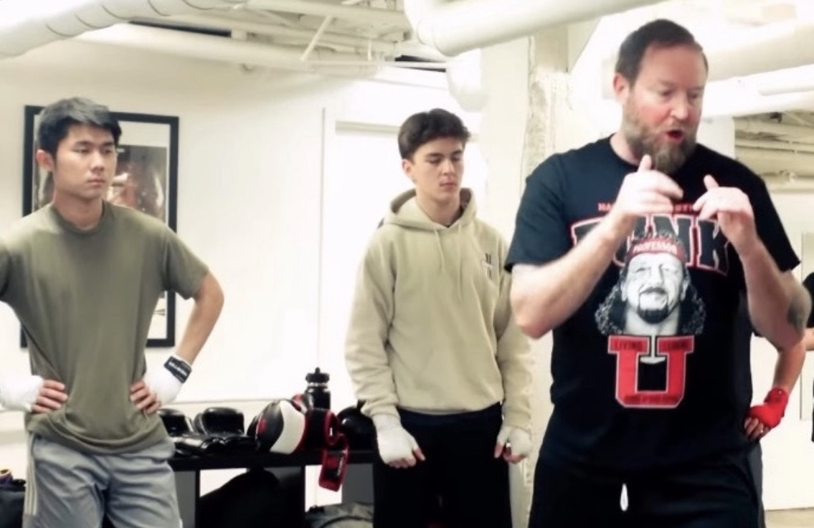

Three months ago, I walked into a boxing gym without much expectation. I needed a break from running, and around that time I kept getting videos of this Japanese boxer named Naoya Inoue on my YouTube feed. Something about his precision and power stuck with me, and eventually I got curious enough to try it myself. Part of me also wanted to feel a bit more physically capable.
Naoya Inoue, the inspiration.
This is a quick reflection on those three months—what it was like learning as a complete beginner, and why I kept showing up.
Going in, I knew boxing would be technical. Running was my main form of physical activity, and that's about as straightforward as it gets. In contrast, boxing felt unnatural. Even throwing a simple jab with proper footwork felt really awkward at first—like my mind and my body weren't in agreement.
Once combinations got involved, it got even harder. I was constantly trying to remember the correct sequence of punches (i.e., jab, cross, hook, etc.) while also thinking about footwork, balance, and timing.
Thankfully, I had a really kind partner named Luke who trained with me during mitt work in my first week. He was patient with me and gave me a lot of pointers. At one point I asked him about what he did for work, and he told me he was a high school freshman. Needless to say, I was very inspired.

Me, Luke, and the coach.
One thing that surprised me was how much of my running fitness carried over. There were conditioning classes after the main boxing sessions, and I honestly handled those pretty comfortably. I remember the coach's wife joking "I want whatever Justin's on", which I thought was hilarious.
But I think this made me realize that fitness wasn't as separate as I initially thought. I definitely leaned on distance running as a sort of excuse to neglect other aspects of fitness — namely strength training. If I was primarily a marathon runner who was averaging 70 miles per week, it didn't feel like it made sense to build muscle that would ultimately weigh me down on long runs.
However, boxing left me so sore that there became days where running would have probably been detrimental to my physical health. In order to still be active during these off days, I picked up my weights for the first time in months. Instead of running six times a week, I began to run only four times a week, while also incorporating both boxing and lifting.
Overall, I felt like a stronger person. It definitely helped seeing tangible results on my body, and I started to become more confident. External validation definitely helped too if I have to be completely honest. Lab mates looked at me with hand wraps and thought it was the coolest thing ever. Friends naturally became very curious about my boxing lessons, as it's not often you come across a boxer.
My goal was to eventually spar, but I never got around to it. Once I started thinking about it seriously, the gym was planning to revamp the sparring classes, which meant they were going to be on hold for a while. So the timing felt right to step away for now — especially after watching Sabastian Sawe and Yomif Kejelcha recently break the two-hour barrier at London. That reminded me of how badly I wanted to go sub-three. I would definitely like to return to boxing after my next marathon though — it taught me a lot, and I appreciated the opportunity to experience new things and learn new skills.